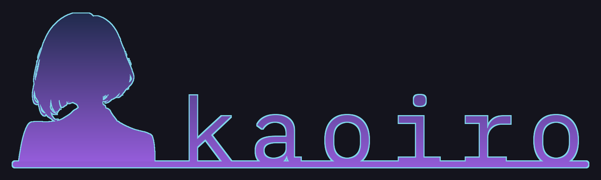
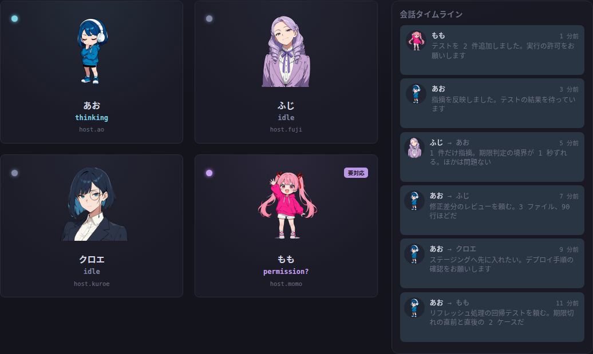
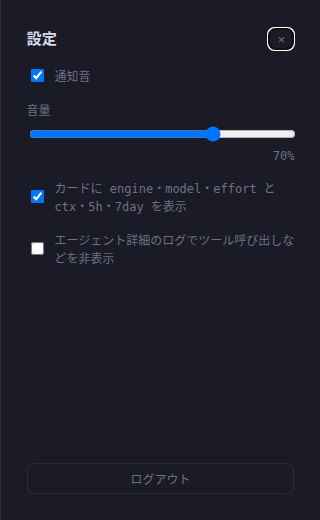

CLI AI エージェントを動かし、見守り、連携させる。それぞれに顔と人格を。
研究用のプロトタイプです。 主に作者と研究室のメンバーが日常的に使うために開発しています。保守や issue への対応は保証しません。
セキュリティ。 operator の認証情報を持つ人は、エージェントが動く全てのマシンでコマンドを実行できます。それらのホストへの SSH 鍵と同じように扱い、導入の前に SECURITY.md を読んでください。
状態が、顔になる
kaoiro は複数の CLI AI エージェントを同時に動かし、見守り、連携させます。エージェントはそれぞれキャラクターになり、表情で今の様子を伝えます。ターミナルを巡回するより、小さな AI のオフィスを見守る感覚です。

推測ではなく、エンジンのイベントから
状態はエージェントが書いた文章から推測せず、エンジンのイベントから導いて表情に描きます。
静かなことも見える
動いているエージェントはそれぞれカードとキャラクター、状態のラベルを持ち、名前は session をまたいで残ります。
呼ばれていることが分かる
回答を待つエージェントには印が付きます。権限の確認はブラウザに届くので、誰も見ていないターミナルで止まり続けることがありません。
オフィス全体を一目で
グリッドの隣のタイムラインに全員の会話が時系列で並ぶことで、作業の流れが把握できます。
全員を、ひとつの画面で
ここに挙げるものは全て今のダッシュボードにあります。kaoiro は MIT License のオープンソースです。
ブラウザから起動
ホスト、ペルソナ、エンジン、作業ディレクトリ、権限のモードを選びます。停止、再起動、復元、session の再開もここで行います。
UI で承認
承認待ちのツール呼び出しはクライアントに届きます。選択式の質問も同じ経路でダイアログになります。
エージェントどうしの連絡
依頼、レビューの依頼、承認をメッセージとして扱い、会話ごとにまとめます。
1 本のタイムライン
返信とエージェント間のメッセージを時刻順に並べます。未読の印が付き、クリックで全文を開けます。
ペルソナは zip のパック
キャラクターは自身でも作成可能な、画像と設定ファイルをまとめた zip ファイルです。標準のセットだけでなく、取り込み用フォルダに置くことで自由に追加できます。稼働中の server に足したパックは、今は再起動の後に読み込まれます。
通知
エージェントから操作が戻ると、デスクトップ通知と状態ごとの音で知らせます。
4 つのエンジンが、一緒に働く
kaoiro は Claude Code、Codex、Antigravity、Grok Build に対応し、エンジンは起動のときに選びます。あるエンジンのエージェントから別のエンジンのエージェントへメッセージが届くので、同じ会話の中で依頼、レビュー、回答を交わせます。
Claude Code
Claude Agent SDK を通して動かします。
Codex
Codex app-server を通して動かします。
Antigravity
Antigravity CLI を通して動かします。
Grok Build
常駐の ACP session として動かします。
エンジンの機能は同じではありません。model や effort の切り替え、権限のモード、ファイルの添付は各エンジンの宣言によります。実行中の turn にメッセージが届くかどうかもエンジンごとに違います。ダッシュボードは宣言された機能に従います。
使い方の例
機能の組み合わせ方の例です。kaoiro は各エージェントの役割を制限しません。
複数のエージェントを並べて動かす
それぞれに別の作業とディレクトリを任せ、ターミナルを巡回する代わりにグリッドを見ます。
実装とレビューを分ける
あるエージェントが実装し、別のエージェントがレビューします。引き継ぎはメッセージとして見えるので、誰かの画面を開かずに追えます。
ディレクターに任せる
1 体をディレクターに任命し、ほかのエージェントへ仕事を割り振らせます。事前に指示しておけば、各モデルの得意な仕事を判断させることもできます。
別の端末から答える
ダッシュボードはスマートフォンの幅まで畳めます。手元の端末から届く環境なら、席を離れていても待っているエージェントに答えられます。
疎結合の部品、柔軟な構成
kaoiro は役割の分かれた 4 つの部品でできています。1 つの server に複数のマシンのエージェントを集められ、マシンごとの runner がそれぞれを監督します。
Server
wrapper を束ねて状態を持ち、client へリアルタイムに届けて、指示を該当のエージェントへ運びます。
Runner
ホストごとに 1 つ。wrapper の起動、停止、再起動とホストの登録を担い、データの経路には入りません。
Wrapper
エージェントを起動し、エンジン固有のイベントを共通の形式へ変換します。wrapper は server へ直接つながります。
Client
各エージェントをキャラクターとして見せます。同梱の Web ダッシュボードは client の 1 つです。
拡張の余地
部品が分かれているので、ほかの部品を書き直さずに 1 つを変えられます。
自分の client を作る
server と client は文書化された公開 protocol (英語)でつながります。同梱のダッシュボードはこの protocol の参照実装なので、同じ protocol で別の client を作れます。
source を変更してエンジンを足す
エンジンごとに wrapper package があり、共有の core の上に載っています。エンジンの追加は、runner と server のエンジンの一覧を含む source の変更です。Grok Build はこの形で追加しました。
画面

はじめる
kaoiro は自分のマシンで動かします。必要なものと Quick start は README に、operator の認証情報が持つ意味は SECURITY.md にあります。導入の前に読んでください。